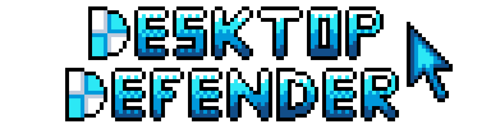

BBB Computer Lab - Programmer

This project was my first chance to put Unreal's VR tools to use. My partner and I recreated the BBB computer lab from the University of Michigan. Together we created an affordance system to implement several different interactions around the lab including fire alarms and white boards. To coordinate the completion of these tasks, we used Jira to manage our workflow.
In addition to completing some assigned tasks, we had to create our own custom interaction for our project. We decided to add a hololens which players could put on their head. Once they did, the "CS Project Shooter" would start, where the player would have to shoot down approaching computer science projects. This project was a great introduction to Unreal and its VR tools which taught me Unreal's blueprint system. I also learned how to use composition to build several types of objects with different interactions.
Desktop Defender - Programmer, Enemy Designer
Desktop Defender is a cooperative bullet-hell game where two players fight waves of viruses attacking their computer. Players take the roles of cursor and antivirus and must combine their different abilities to win. This game was my final project for EECS 494 where I collaborated with four other students to create a complete game Unity. Using Jira, we were able to coordinate tasks to meet weekly deadlines. We also took advantage of the Event Bus design pattern to coordinate communication between game objects.

My main role on the project was as an enemy designer. I created and programmed all of the various viruses players face while using composition in C# to reuse behaviors between enemies. I also designed two unique bosses with difficult attack patterns. Learning how to balance difficulty with fairness was an exciting challenge to overcome. On top of these responsibilities, I also created most of the art for the game including the logo and enemies.


Time Warrior - Designer, Programmer
Time Warrior is a game I created by myself in Unity as part of a rapid prototyping project. I had to design and develop a short, complete game in two weeks to prove that I could build a rapid prototype. In this game, players must defeat all the enemies in each level to progress. To dodge deadly projectiles, they must use their limited time stopping powers.
Due to the time constraints, I had to focus on a simple mechanic and iterate on it over multiple levels. Early levels would logically guide players through the mechanics while later levels would introduce new obstacles to test how well players learned the mechanics. Along the way, I used a Toast message system to provide players with hints.
Play GameMetroid Remake - Programmer
In this project, my partner, Ahmad Kady, and I remade the opening areas from the original Metroid using Unity. This project required us to do research on the mechanics of the game so we could recreate them as authentically as possible. We also implemented our own custom level with a new upgrade that allows players to fire a missile and steer its direction. Players would have to navigate missiles through increasingly challenging mazes to open doors and reach the end. This was my first major Unity project which familiarized me with Unity and C#.